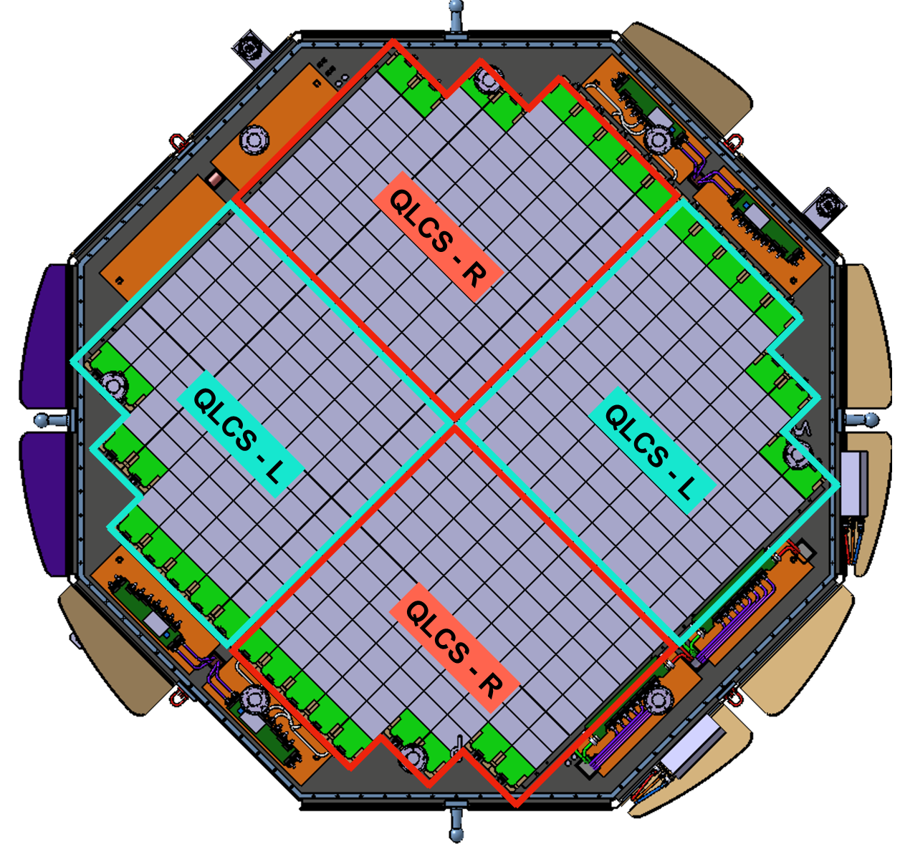

02 / Precision tooling
AMS-02 Layer 0 integration tooling
Precision alignment and adhesive-bonding tooling for the AMS-02 Layer 0 silicon-tracker upgrade, part of the ISS-based AMS-02 particle-physics programme. Controlled fragile sensor-subassembly positioning to ~100 µm across a 1100 × 1200 mm integration fixture.
- ~100 µm
- Positioning across 1100 × 1200 mm
- 120 → 93 µm
- Worst-case alignment error
- 62 → 26 µm
- Predicted self-weight deformation